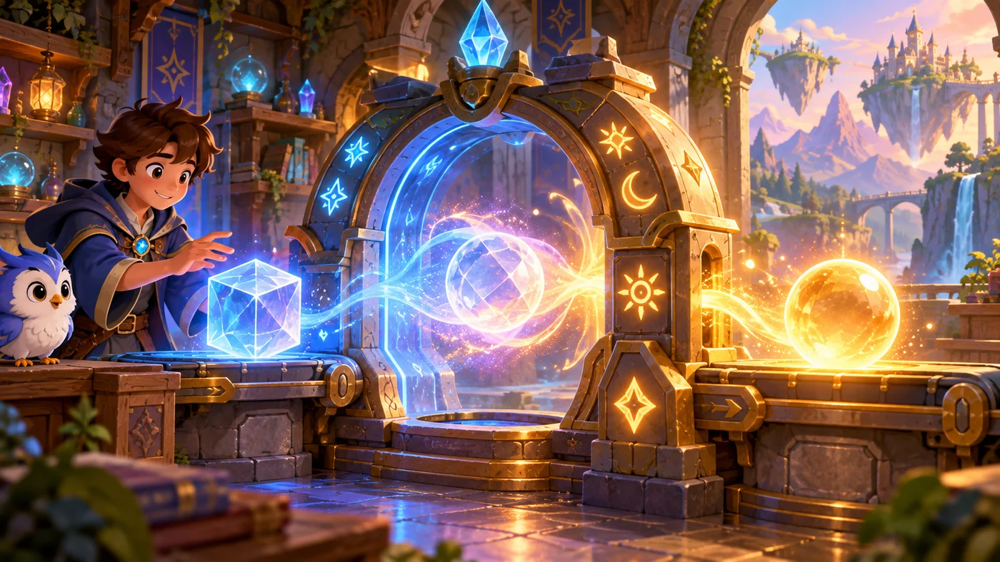
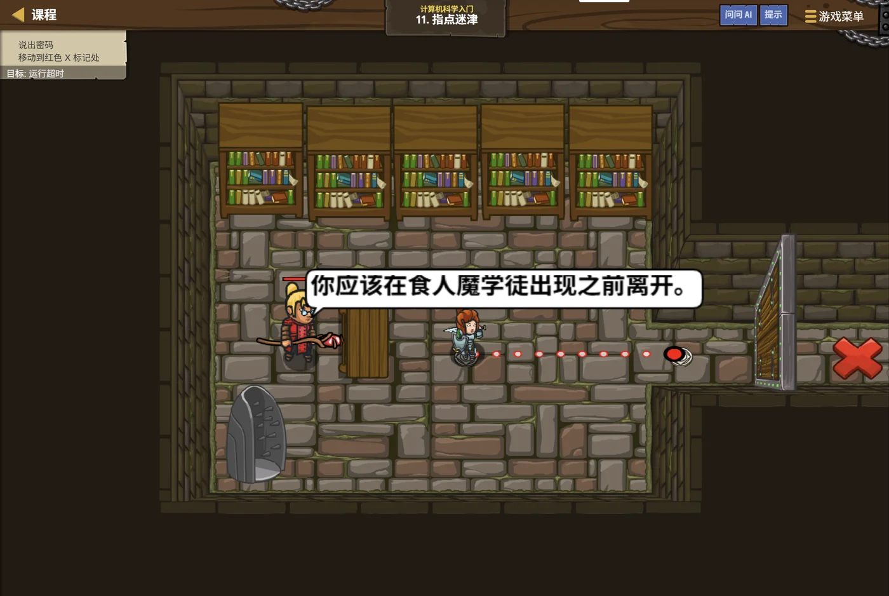

故事：溪谷的石门要一道口令才能打开。
哈什鲍姆摊手：我也不知道口令是什么——但门边刻着提示。
你走近一看，石门上果然有一行小字。安雅在你身后说：
这就是"指点迷津"——线索一直都在，只是你得先去看。
扣哒考级 · GESP C++ 二级 · 第 3 单元 | 回声溪谷 ECHOSTREAM VALLEY
密文石桥 ASCII 编码与数据类型转换
ASCII Encoding & Type Conversion

哈什鲍姆
符文学者 · 你的向导
溪谷上游横着一座石桥。桥面的每一块石板上都刻着奇怪的东西——
左边是一个字母或符号，右边是一串数字。
安雅不认识这些符号，把你带到了桥头的石屋：哈什鲍姆（Hushbaum）正在那里翻一本厚书。
这些是密文。老人头也不抬地说，不过在计算机的世界里，它们其实一点都不神秘—— 你看到的每一个字母、每一个汉字，背后都站着一个数字。
安雅不认识这些符号，把你带到了桥头的石屋：哈什鲍姆（Hushbaum）正在那里翻一本厚书。
这些是密文。老人头也不抬地说，不过在计算机的世界里，它们其实一点都不神秘—— 你看到的每一个字母、每一个汉字，背后都站着一个数字。
哈什鲍姆 · 符文学者
上一单元你学会了"把想法画成图"。这一单元我们往更深处走一步：计算机到底是怎么"认识"一个字符的？
答案会让你有点意外——它根本不认识字符，它只认识数字。它把字符偷偷换成了数字。
assets/illustrations/py-L2-03-01_ascii_tablet.webp
【配图位】石桥的一块长条石板上刻着两列网格：左列是一个个字母与符号的浮雕，右列是一个个数字；每一对之间都有一条细细的发光符文线把它们连起来；石板边缘长着青苔，桥下是流过的溪水；一名新兵蹲在石板前用手指沿着符文线比划。
0 单元导语与目标
Unit Overview
0.1 学习目标
1学完这个单元，你将能……
- 说清"计算机只认 0 和 1"到底是什么意思
- 读懂简单的二进制数，并和十进制互相换算
- 说出 ASCII 编码是什么，它是为了解决什么问题
- 记住常用字符的 ASCII 值（'A'、'a'、'0'）
- 在 C++ 里把字符和数字互相转换
- 分清自动转换和强制转换，并预判转换结果
2对标 GESP 考纲（C++ 二级）
- 掌握 ASCII 编码的基本概念
- 掌握字符与整数之间的相互转换
- 掌握数据类型的自动转换与强制转换规则
- 了解常见进制的表示方法
- 考核目标：能预判表达式中的类型转换结果，能完成 ASCII 相关计算
0.2 考纲对照
| 本单元小节 | 对应考纲条目 | 真题常考形式 |
|---|---|---|
| 1 二进制 | 计算机的 0 和 1 | 把二进制数换算成十进制 |
| 2 ASCII 编码 | 字符与数字的对应关系 | 'A' 的 ASCII 值是多少、'a' 减 'A' 等于几 |
| 3 类型转换 | 数据类型的转换 | 3 == 3.0 的结果、(int)3.9 的结果 |
| 4 进制写法 | 不同进制的表示 | 判断某写法是几进制、它等于十进制几 |
1 计算机只认 0 和 1
Only 0 and 1
1.1 两种状态就够用
哈什鲍姆把书合上：你想想，电路里最可靠的是什么？是"通"和"断"这两种状态。灯亮着就是 1，灯灭了就是 0——中间没有"半亮"这种事。
assets/illustrations/cpp-L2-03-03_binary_lanterns.webp
【配图位】石屋墙上挂着一排八盏小灯笼，每盏只有"亮"和"灭"两种状态；灯笼下方各刻着一个数字牌，从左到右依次是 128、64、32、16、8、4、2、1；当前点亮的灯笼是 64 和 8 两盏，下方一块石板显示合计结果 72；一名新兵举着灯杵站在旁边比划，扣哒鸭用翅膀指着亮着的两盏。
打个比方：
二进制就像一排开关。
每个开关只有"开"和"关"两种状态，可把一排开关组合起来，就能表示很多种不同的情况：
一排 1 个开关 → 2 种情况；一排 2 个开关 → 4 种；一排 3 个 → 8 种……
一排 n 个开关，就能表示 2 的 n 次方种情况。
计算机用的就是"一排 8 个开关"——也就是一个字节（8 位）。
每个开关只有"开"和"关"两种状态，可把一排开关组合起来，就能表示很多种不同的情况：
一排 1 个开关 → 2 种情况；一排 2 个开关 → 4 种；一排 3 个 → 8 种……
一排 n 个开关，就能表示 2 的 n 次方种情况。
计算机用的就是"一排 8 个开关"——也就是一个字节（8 位）。
1.2 二进制数怎么读
| 十进制 | 二进制 | 怎么算出来的 |
|---|---|---|
| 1 | 1 | 1 × 1 |
| 2 | 10 | 1 × 2 + 0 × 1 |
| 3 | 11 | 1 × 2 + 1 × 1 |
| 4 | 100 | 1 × 4 |
| 5 | 101 | 1 × 4 + 0 × 2 + 1 × 1 |
| 10 | 1010 | 1 × 8 + 0 × 4 + 1 × 2 + 0 × 1 |
图 3（SVG）：二进制每一位的份量
二进制读法的口诀：
从右往左，每一位的"份量"依次是 1、2、4、8、16、32、64、128……（也就是 2 的 0 次方、1 次方、2 次方……）
把写着 1 的那些位对应的份量加起来，就是它的十进制值。
例子：
把写着 1 的那些位对应的份量加起来，就是它的十进制值。
例子：
1010 → 从右往左第 2 位和第 4 位是 1 → 2 + 8 = 10。
2 ASCII 编码
ASCII
2.1 字符怎么变成数字
哈什鲍姆在石板上画了一只鸡，又在旁边写了个 7：
这是很久以前的规矩：大家提前约定好，鸡就写作 7，蛋就写作 8。 以后不管谁看到 7，都知道那说的是鸡。
计算机里也一样——人们事先约定了一张表，把每个字符都对应上一个数字。这就是 ASCII 编码。
ASCII 编码是什么：
ASCII 是一张"字符 ↔ 数字"的对照表。
它给常用的英文字母、数字、标点符号各分配了一个 0~127 之间的编号。
计算机内部只存这些编号（二进制），显示的时候再照着表查回字符。
所以：计算机从来不知道什么是"A"，它只知道"A"的编号是 65。
它给常用的英文字母、数字、标点符号各分配了一个 0~127 之间的编号。
计算机内部只存这些编号（二进制），显示的时候再照着表查回字符。
所以：计算机从来不知道什么是"A"，它只知道"A"的编号是 65。
2.2 常见字符的编码
| 字符 | ASCII 值 | 记忆窍门 |
|---|---|---|
'0' ~ '9' | 48 ~ 57 | 数字字符 '0' 是 48，往后依次 +1 |
'A' ~ 'Z' | 65 ~ 90 | 'A' 是 65，26 个大写字母连续排列 |
'a' ~ 'z' | 97 ~ 122 | 'a' 是 97，比 'A' 大 32 |
| 空格 | 32 | 最小的"可见字符" |
换行符 '\n' | 10 | 不可见的控制字符 |
三个必须背下来的数：
记住之后就能推出其它：
大写字母：
小写字母：
大小写之差：
'A' = 65、'a' = 97、'0' = 48。记住之后就能推出其它：
大写字母：
'A' + 1 = 'B'，'A' + 25 = 'Z'；小写字母：
'a' + 1 = 'b'；大小写之差：
'a' - 'A' = 97 - 65 = 32——这一个 32 变化成很多题目。
2.3 字符与数字互转
assets/illustrations/cpp-L2-03-04_char_number_bridge.webp
【配图位】石桥中央的一段特写：桥面石板被分成两半，左半边堆着一块块刻着字母的石牌（'A'、'B'），右半边堆着一块块刻着数字的石牌（65、66）；一条由符文组成的光帶在两侧之间来回移动，把石牌"翻译"成另一种形态；桥两侧各立一块小指示牌，分别写着 "int" 与 "char"；扣哒鸭站在桥中间当翻译。
把字符当数字用，把数字当字符用
C++
char ch = 'A';
int code = (int)ch; // 字符 → 数字
cout << code << endl; // 65
char back = (char)66; // 数字 → 字符
cout << back << endl; // B
cout << (char)(ch + 1) << endl; // B 向后挪一个字母
cout << (ch + 32) << endl; // 97 大写变小写（得到的是数字）OUTPUT 65
B
B
97
B
B
97
两个超实用的换算套路
C++
// 一、数字字符 → 真正的数字
char c = '7';
int n = c - '0'; // 55 - 48 = 7
cout << n << endl; // 7
// 二、大写字母 → 小写字母
char up = 'C';
char low = up + 32; // 67 + 32 = 99，也就是 'c'
cout << low; // c口诀
数字字符 - '0' 得到数字；大写 + 32 得到小写
为什么是
要拿到"真正的 7"，就得减掉
这是一个"把字符数字变成数学数字"的标准写法，二级题目里出现得非常频繁。
- '0' 而不是直接减？
因为字符 '7' 在计算机里存的是 55，不是 7。要拿到"真正的 7"，就得减掉
'0'（48）：55 - 48 = 7。这是一个"把字符数字变成数学数字"的标准写法，二级题目里出现得非常频繁。
3 数据类型转换
Type Conversion
3.1 自动转换

assets/illustrations/cpp-L2-03-02_type_conversion.webp
【配图位】石屋作坊里并排放着两座金属转换炉：左边一座带有"自动"标牌，水流（小数）从大口进入后自动汇成更"精细"的水雾从另一口流出，什么都不少（自动转换）；右边一座带有一根需要手动拉动的粗拉杆，水流经窄口后被挤成一粒粒石子、还有细屑从侧面漏掉（强制转换，会丢小数）；一名新兵站在右边炉子前拉动拉杆。
| 方向 | 例子 | 结果 | 会丢东西吗 |
|---|---|---|---|
| 小 → 大（低精度 → 高精度） | int → double | 3 变成 3.0 | 不会丢 |
| 字符 → 整数 | char → int | 'A' 变成 65 | 不会丢 |
| 大 → 小 | double → int | 3.9 变成 3 | 会丢小数部分 |
| 整数之间运算 | 7 / 2（都是 int） | 3 | 会丢小数部分 |
图 6（SVG）：类型转换的两个方向
自动转换的核心规律：
两个不同类型的数一起运算时，范围小的那个会先被"提升"成范围大的。
所以
但要注意：整数除整数仍然是整数——
所以
int 和 double 相加，结果是 double。但要注意：整数除整数仍然是整数——
7 / 2 是 3，不是 3.5，因为两个操作数都是 int，没有触发提升。
3.2 强制转换
写清楚"我要换类型"
C++
double x = 3.9;
int a = (int)x; // 3 截断（不是四舍五入）
int b = int(x); // 3 这种写法也可以
int c = x; // 3 自动转换也能做到，但不如写清楚
int m = 7, n = 2;
cout << m / n << endl; // 3
cout << (double)m / n << endl; // 3.5 先转成 double 再除
bool t = (bool)5; // true（非 0 都是真）
bool f = (bool)0; // false
cout << t << " " << f; // 1 0关键
(类型)值 就是强制转换；转换发生在运算之前，结果才会跟着变3.3 转换的两大陷阱
| 陷阱 | 例子 | 为什么会错 |
|---|---|---|
| 截断 ≠ 四舍五入 | (int)3.9 得到 3 | 小数部分被直接砍掉，不看它有多接近下一位 |
| 整除先于提升 | (double)(7 / 2) 得到 3.0 | 括号里先算完了整除，再转就晚了——要写成 (double)7 / 2 |
| 布尔转换 | bool(5)、bool(-5) 都是 1 | 非 0 即真——负数也是"真" |
| 整数与小数比较 | 3 == 3.0 得到 1 | 比较前 int 会自动提升为 double，两边相等 |
最容易丢分的一条：
前者：先算
后者：先把 7 转成 7.0，再算
一句话：
(double)(7 / 2) 和 (double)7 / 2 结果完全不同！前者：先算
7 / 2 = 3（整除），再转成 3.0；后者：先把 7 转成 7.0，再算
7.0 / 2 = 3.5。一句话：
(double) 要写在除法之前，才有用。
4 进制的写法
Number Bases
4.1 四种进制的写法
| 进制 | C++ 写法 | 用到的数字 | 例子 | 等于十进制 |
|---|---|---|---|---|
| 十进制 | 直接写 | 0~9 | 255 | 255 |
| 八进制 | 以 0 开头 | 0~7 | 0377 | 255 |
| 十六进制 | 以 0x 开头 | 0~9、A~F | 0xFF | 255 |
| 二进制 | 以 0b 开头 | 0、1 | 0b11111111 | 255 |
一眼认进制：
看到
十六进制里的 A~F 分别代表 10、11、12、13、14、15。
为什么要用十六进制？因为一位十六进制刚好对应四位二进制，写起来短、看起来清楚——
0x 就是十六进制，看到 0b 就是二进制，看到 0 开头（后面跟数字）就是八进制。十六进制里的 A~F 分别代表 10、11、12、13、14、15。
为什么要用十六进制？因为一位十六进制刚好对应四位二进制，写起来短、看起来清楚——
0xFF 比 0b11111111 好写多了。
4.2 让输出变成十六进制
同一个数，用不同进制输出
C++
int n = 255;
cout << n << endl; // 255 十进制
cout << hex << n << endl; // ff 十六进制
cout << oct << n << endl; // 377 八进制
cout << dec << n << endl; // 255 换回十进制注意
hex / oct / dec 会一直生效，用完了记得切回 dec
打个比方：
同一个数 255，用不同进制写，就像同一件事用不同的"计量单位"说：
255（十进制）＝ 255 个"1"；
0377（八进制）＝ 3 个"64" + 7 个"8" + 7 个"1"；
0xFF（十六进制）＝ 15 个"16" + 15 个"1"。
它们说的是同一件事，只是"打包方式"不同。
255（十进制）＝ 255 个"1"；
0377（八进制）＝ 3 个"64" + 7 个"8" + 7 个"1"；
0xFF（十六进制）＝ 15 个"16" + 15 个"1"。
它们说的是同一件事，只是"打包方式"不同。
5 代码实战
Level Practice
关卡
指点迷津
进入关卡 →思路：关卡的"提示"按钮里写着口令。把口令用 hero.say() 说出来，
门就会打开。这一关考的不是代码，而是遇到问题时，会不会先去找线索。

assets/stages/py-L2-03-stage1_library_password.webp
【游戏截图位】关卡指点迷津通关画面：石制图书馆大门缓缓打开，门楣上刻着一行口令符文；英雄站在门前刚喊完口令，身旁有对话气泡；屏幕下方代码区显示 say 语句，右上角显示"关卡完成"提示。
重点示例：说出正确的口令
C++
// 你需要图书馆大门的开门密码
// 点击代码窗口上面的"提示"按钮，点击"下一页"
#include <iostream>
using namespace std;
int main() {
hero.moveRight();
hero.say("Hush"); // 口令是一个字符串
hero.moveRight();
return 0;
}要点
hero.say() 里的内容是字符串，要用双引号包起来
和本单元的关联：
H 是 72、u 是 117、s 是 115、h 是 104。
你只是敲了几个字母，计算机存下来的却是一串编号——这正是这一单元要讲的事。
去扣哒世界闯这一关 →
"Hush" 这五个字符，在计算机里其实是一串数字——H 是 72、u 是 117、s 是 115、h 是 104。
你只是敲了几个字母，计算机存下来的却是一串编号——这正是这一单元要讲的事。
6 常见陷阱
Common Pitfalls

扣哒鸭 · 调试官
编码和类型转换，是二级最容易"看错一眼就丢分"的地方。四条，全是真题爱考的点。
1
把字符
'7' 当成数字 7。
扣哒鸭：字符
想拿到真正的 7，必须写
输出
'7' 在计算机里存的是 55，不是 7。想拿到真正的 7，必须写
c - '0'。输出
'7' 得到的是字母 7（能看见），输出 7 得到的也是 7——但它们的"身份"完全不同。正确写法：
int n = c - '0';2
以为
(int)3.9 会四舍五入成 4。
扣哒鸭：是"截断"，不是"四舍五入"。
想让 3.9 变成 4，得用四舍五入的函数，不是强制转换。
(int)3.9 得到 3，(int)-3.9 得到 -3。想让 3.9 变成 4，得用四舍五入的函数，不是强制转换。
正确认识：强制转换 = 砍掉小数部分
3
把
(double) 写在了括号外面。
扣哒鸭：
因为括号里的 7 / 2 先按整除算完了，再转类型已经来不及。
要写成
(double)(7 / 2) 得到的是 3.0，不是 3.5！因为括号里的 7 / 2 先按整除算完了，再转类型已经来不及。
要写成
(double)7 / 2——转换必须发生在除法之前。正确写法：
(double)7 / 24
以为负数转成 bool 是"假"。

扣哒鸭：C++ 里"非 0 即真"。
所以
bool(5) 是 1，bool(-5) 也是 1，只有 bool(0) 才是 0。所以
bool(5) + bool(-5) + bool(5.0) 等于 1 + 1 + 1 = 3。正确认识：只有 0 是假，其余都是真
7 题目练习
Practice
前 2 题改编自 C++ 二级真题，其余为原创练习题。
改编自 2026 年 9 月 · C++ 二级 · 第 3 题单选题
执行如下 C++ 代码，其输出是（ ）。
cout << (3 == 3.0);
A.1 B.1.0 C.0 D.-1
查看答案与详解
答案：A。比较时，
B 项错在关系运算的结果一定是整数 1 或 0，不会是 1.0；
C、D 项误判了比较结果。
考点：类型提升 + 关系运算的结果是 1 或 0。
对应小节3.1 自动转换。
int 类型的 3 会自动提升为 double 的 3.0，
两边数值相等，所以关系表达式成立，结果为 1。B 项错在关系运算的结果一定是整数 1 或 0，不会是 1.0；
C、D 项误判了比较结果。
考点：类型提升 + 关系运算的结果是 1 或 0。
对应小节3.1 自动转换。
改编自 2026 年 9 月 · C++ 二级 · 第 4 题单选题
执行如下 C++ 代码，其输出是（ ）。
cout << (bool(5) + bool(-5) + bool(5.0));
A.0 B.1 C.2 D.3
查看答案与详解
答案：D。C++ 的规则是"非 0 即真"：
三数相加：1 + 1 + 1 = 3。
本题最容易错的是把 -5 当成"假"——记住只有 0 才是假。
对应小节3.2 强制转换。
bool(5) → 1（5 不是 0）bool(-5) → 1（负数也不是 0）bool(5.0) → 1（非 0 的小数也是真）三数相加：1 + 1 + 1 = 3。
本题最容易错的是把 -5 当成"假"——记住只有 0 才是假。
对应小节3.2 强制转换。
原创练习题单选题
已知
'A' 的 ASCII 值是 65，则 'F' 的 ASCII 值是（ ）。A.66 B.70 C.71 D.102
查看答案与详解
答案：B。大写字母在 ASCII 表里是连续排列的：
A=65、B=66、C=67、D=68、E=69、F=70。
也可以用算式：
D 项 102 是 'f'（小写）的值——大小写相差 32，别记反。
对应小节2.2 常见字符的编码。
A=65、B=66、C=67、D=68、E=69、F=70。
也可以用算式：
'F' - 'A' = 5，所以 65 + 5 = 70。D 项 102 是 'f'（小写）的值——大小写相差 32，别记反。
对应小节2.2 常见字符的编码。
原创练习题单选题
下列 C++ 代码执行后，输出的结果是（ ）。
char c = '5'; cout << c - '0';
A.5 B.53 C.48 D.出错
查看答案与详解
答案：A。字符
所以
B 项 53 是直接输出
这个
对应小节2.3 字符与数字互转。
'5' 的 ASCII 值是 53，'0' 是 48，所以
'5' - '0' = 53 - 48 = 5。B 项 53 是直接输出
c 时得到的结果（字符被当成数字输出）。这个
- '0' 的套路，是"把数字字符变成真数字"的标准写法。对应小节2.3 字符与数字互转。
原创练习题判断题
在 C++ 中，
(double)(7 / 2) 的结果是 3.5。（ ）查看答案与详解
答案：错误（×）。括号里的
想要 3.5，必须写成
对应小节3.3 转换的两大陷阱。
7 / 2 会先按整数除法算完，得到 3，
然后才被转换成 3.0，所以结果是 3.0，不是 3.5。想要 3.5，必须写成
(double)7 / 2——转换要发生在除法之前。对应小节3.3 转换的两大陷阱。
原创练习题单选题
下列 C++ 常量中，表示的是十六进制数的是（ ）。
A.
0377 B.0xFF
C.0b1010 D.255
查看答案与详解
答案：B。
A 以
C 以
D 是普通的十进制 255。
记忆：0x 十六、0b 二、0 开头是八。
对应小节4.1 四种进制的写法。
0x 开头才是十六进制。A 以
0 开头（后面跟数字），是八进制的 377，等于十进制 255；C 以
0b 开头，是二进制的 1010，等于十进制 10；D 是普通的十进制 255。
记忆：0x 十六、0b 二、0 开头是八。
对应小节4.1 四种进制的写法。
原创练习题编程题
题目要求：读入一个大写字母，输出它的小写字母，以及它在 ASCII 表中的编号。
样例：输入
样例：输入
C，输出 c 67。查看参考答案与要点
#include <iostream>
using namespace std;
int main() {
char up;
cin >> up;
char low = up + 32; // 大写 → 小写：加 32
int code = (int)up; // 字符 → 编号
cout << low << " " << code;
return 0;
}
输入 C，输出 c 67。
要点：
① 大小写字母的 ASCII 值相差 32，"大写 + 32 = 小写"；
② 把 char 赋给 int 变量时会输出它的编号，
也可以显式写 (int)up 让意图更清楚；
③ 反之，若直接 cout << low，输出的是字母本身——要分清"输出字符"和"输出编号"；
④ 这一题同时用到了本单元的两块内容：ASCII 编码与类型转换。
对应小节2.3 字符与数字互转。
8 本单元小结
Unit Summary
哈什鲍姆 · 符文学者
四句话记住这一单元：一、计算机只认 0 和 1；每一位的份量从右往左是 1、2、4、8……
二、ASCII 是"字符 ↔ 数字"的对照表：'A'=65、'a'=97、'0'=48，大小写相差 32。
三、数字字符减 '0' 得到数字；写 (double) 要写在除法之前。
四、0x 十六进制、0b 二进制、0 开头八进制。
桥上的密文你全都看懂了。下一单元，我们进迷宫。
你在石桥上学会了什么
- 二进制——每一位的份量是 1、2、4、8、16……把写着 1 的位加起来就是十进制值。
- 一个字节——8 个二进制位，能表示 2 的 8 次方 = 256 种情况。
- ASCII——字符与数字的对照表，范围 0~127。
- 三个必背值——
'A'= 65、'a'= 97、'0'= 48。 - 大小写差 32——大写 + 32 = 小写。
- 数字字符转数字——
n = c - '0'。 - 自动转换——小范围类型自动提升为大范围类型；
3 == 3.0成立。 - 强制转换——
(类型)值；小数转整型是截断，不是四舍五入。 - (double) 的位置——必须写在除法之前：
(double)7 / 2 = 3.5。 - 布尔转换——非 0 即真，负数也是真。
- 四种进制——十进制直接写、八进制
0开头、十六进制0x、二进制0b。 - 输出进制——
cout << hex / oct / dec，用完记得切回dec。